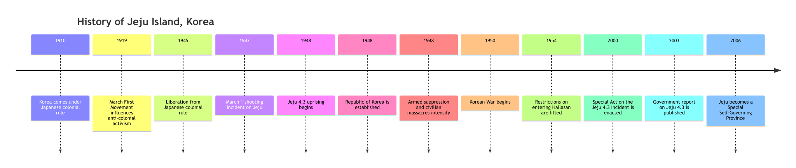

Research question
How have historical trauma and maritime heritage shaped contemporary Jeju?
The project examines the relationship between the Jeju 4.3 Incident, haenyeo culture, local identity, and governance.
Research & historical context
This page brings together the project’s central question, a short contextual overview, and the full timeline image supplied with the original materials.
Research question
The project examines the relationship between the Jeju 4.3 Incident, haenyeo culture, local identity, and governance.
The Jeju 4.3 Incident refers to a period of violence and civilian suffering beginning in 1948. For many years, open discussion was constrained. Later truth-seeking and official recognition became important to public memory on the island.
The full overview
The original project timeline is preserved below. On a small screen, scroll horizontally to inspect the complete image.

How to read the timeline
The timeline begins in 1910 and notes the March First Movement in 1919, followed by liberation from Japanese colonial rule in 1945.
The original graphic marks the March 1 shooting incident, the beginning of the Jeju 4.3 Incident, intensified suppression, and the start of the Korean War.
Later milestones include the 2003 government report and Jeju’s establishment as a Special Self-Governing Province in 2006.
Dates and labels are reproduced from the project’s supplied timeline graphic; check the references page for research sources.